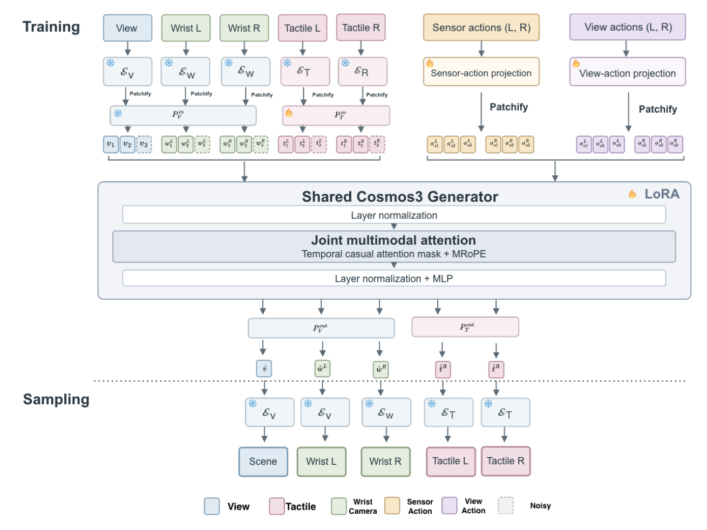
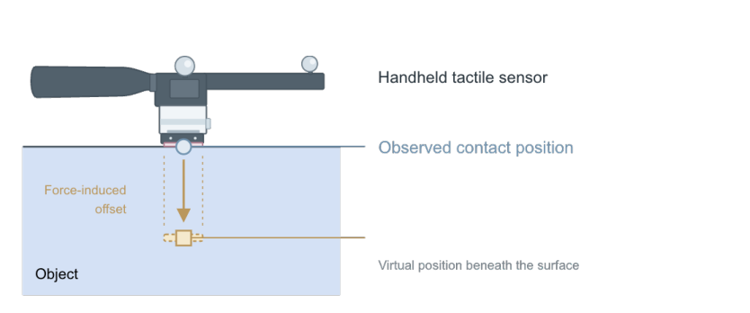

Supplementary videos for a paper under double-blind review
Action-conditioned world models for contact-rich manipulation require data that captures how contact forms, slides, and releases under varying force. Such data are slow to collect through robot teleoperation, which often lacks force feedback and is constrained by gripper geometry. We ask whether these dynamics can instead be learned from human physical interaction and transferred to a robot.
We present ACTS, a visuo-tactile world model trained only on human interaction data. Operators manipulate handheld GelSight sensors while we record third-person and wrist video, tactile images, 6-DoF sensor motion, and tactile-derived normal force, yielding React, a 4.9-hour bimanual dataset across three objects. We represent actions at the tactile sensor as motion augmented by force change, providing a shared action space for human collection and robot execution. ACTS jointly predicts future scene, wrist, and tactile observations. Without fine-tuning, predicted tactile imprints on robot teleoperation still appear and disappear with recorded contact, while wrist views can blur or hallucinate structure.
Frozen encoders map the scene view, both wrist views, and both tactile streams to latents. A Cosmos3 generator, adapted with LoRA, jointly denoises future tokens of all five streams, conditioned on the input frames, force-aware sensor actions, and view-aligned actions.

Each action is the relative sensor motion plus a displacement along the gel normal proportional to the change in estimated normal force. A robot carrying the same sensor produces actions in the same space.

Held-out human data. From 8 input frames and the recorded actions, ACTS predicts the next 8 frames (0.53 s at 15 fps) of all five streams. Top row: ground truth; bottom row: prediction.
Models trained only on human data, applied to robot teleoperation without fine-tuning. Robot tactile color and wrist-camera tone are normalized to the human data.
ACTS and the VT-WM-style baseline, both trained on React, on the same test window. Each clip shows the ground truth once, with one prediction row per model below it.
Force-aware and pose-only sensor actions on the same test window, shown under one ground-truth row.
ACTS generates the future autoregressively, 8 frames at a time. Each block is conditioned on the input frames, the blocks generated before it, and the recorded actions. From 8 input frames, 15 blocks give 120 predicted frames (8 s).